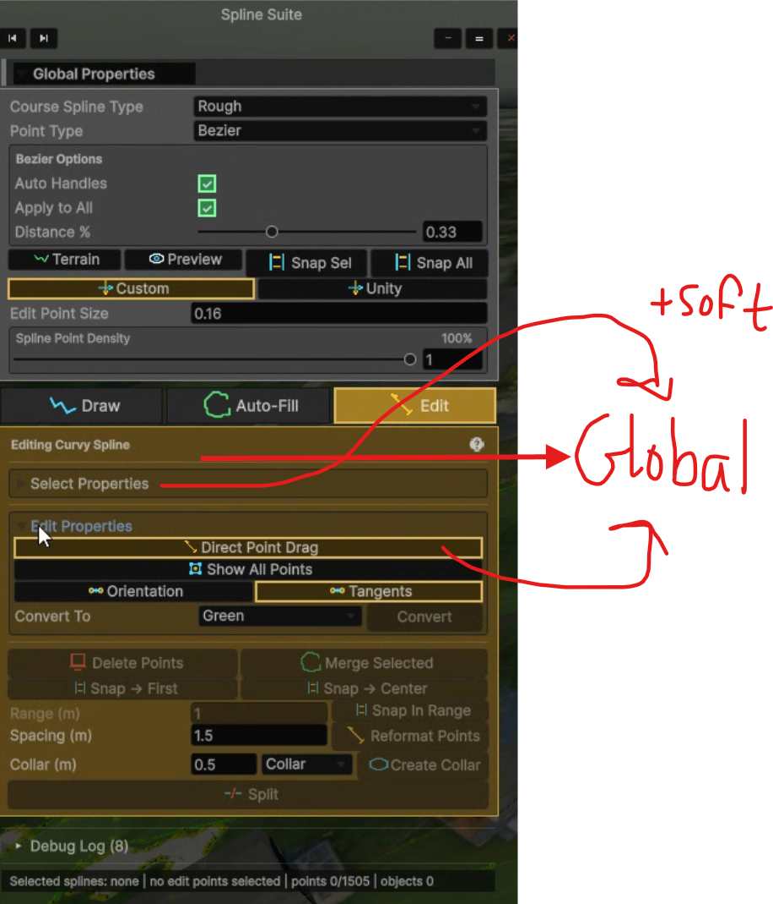
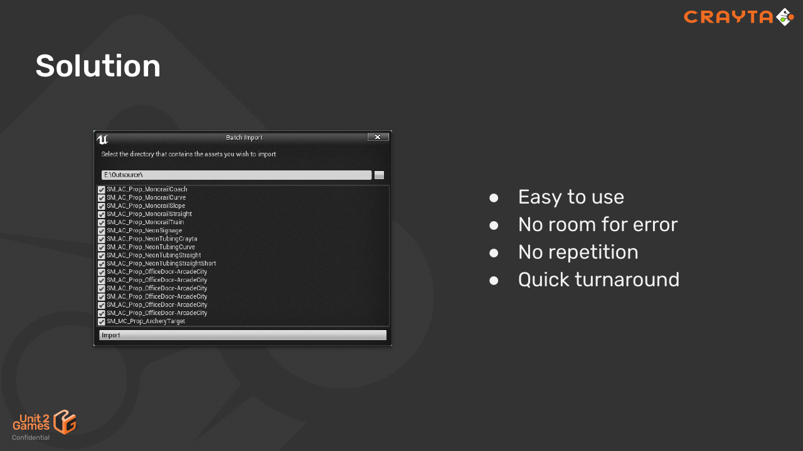
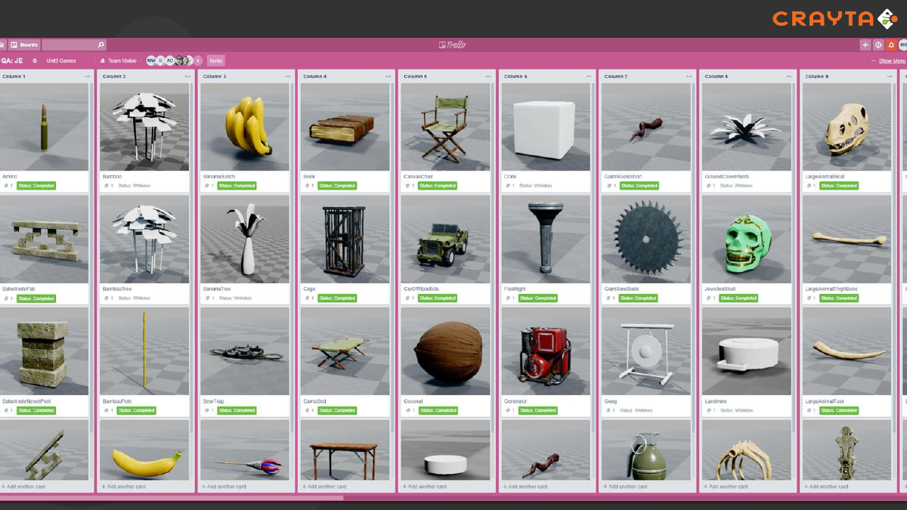

Evidence & attribution
Use each visual to make one teaching point
Actual source captures are staged here with their intended use and limits. Historical GOLF+ captures are process evidence; the refreshed PySide images are current offline sample states.
New primary GOLF+ example

Use this supplied image as the main case on 52A and 53C. Its six visible stages are Input, Parameters, Generate, optional Edit, Finalize and Integrate. It is a different tool view from the older overlay and Spline Suite images. Open the detailed teaching analysis · Source provenance.
The existing capture is sufficient for the visual-design discussion. A new Unity capture is optional unless the teaching claim requires another state or behavior. Neither muted controls nor filled stage markers establish programmatic availability or completion by themselves.
Earlier GOLF+ process evidence
The local GOLF+ notes yielded the course overlay, annotated Spline Suite feedback and an October UI Quality Playbook. These provide a stronger personal process story than a generic example: identify friction, critique hierarchy, record shared rules, then verify a revision.



Overlay notes · GUI feedback · UI Quality Playbook
The playbook records ordered Detect → Generate → Finalize → Adopt steps, restrained advanced options, consistent spacing and shared semantic color roles. It supports the style-sheet discussion. Its full-width primary controls also demonstrate why a web-course heuristic must be adapted to context. The file is evidence of a specification, not proof that every tool currently implements it.
Optional next evidence for a behavior or before/after case: a fresh capture of the same task after the documented changes, one failure/recovery state, and a short instructor narration of the decision and observed result. A recent chat identified these local documentation sources; Notion was not accessed. Do not present the August images as the October implementation or as a matched before/after pair.
The supplied game-production talk
Marcus White, Unit 2 Games: Using Python to Streamline Asset Workflows for a Small Team. The 41-page PDF connects a compact batch interface to a broader asset workflow. Use it for production reasoning; its older Unreal Python ecosystem is not the setup reference for this UE5 course.





The checkmarks on the talk’s aspiration slides are not measured evidence of zero errors or quantified speed gains. Keep the author, organization and page reference visible. Source pages are reproduced intact, including their existing footer.
Week 1 connection
The verified course lenses are Constraints, Systems, Leverage and Throughput. Use them as continuity. Balance, rhythm, emphasis, movement and unity are an art-principles bridge; the review does not invent a Week 1 slide number for an art principle that was not found in the supplied Week 1 deck.
Primary references for added material
| Reference | Use and limitation |
|---|---|
| Atlassian: user stories | Role, desired outcome and benefit; a story supports conversation rather than replacing acceptance checks. |
| NN/g: story mapping | Activities, steps and details; use a small vertical slice of the artist workflow. |
| NN/g: test scenarios | Give a goal and context without teaching the interface’s click sequence. |
| Getty: elements of art | Value as lightness/darkness; distinguish it from a software HSV coordinate. |
| Getty: principles of design | Balance, emphasis, movement, rhythm and unity provide an art vocabulary for UI critique. |
| W3C: text contrast | Use measured contrast as a practical desktop UI benchmark; this is not a claim of full WCAG conformance. |
| W3C: use of color | Meaning must not depend on color alone. |
| Figma: prototyping | Connected frames and interactions for flow testing; not evidence that engine operations work. |
| Figma: design systems | Shared styles, variables and component libraries support consistency across teams. |
| Qt: layout management | Layout managers express relationships and respond to sizing changes; check installed-version behavior. |
| Epic: Editor Utility Widgets | UMG-based editor tools; distinct from the project’s existing C++ Slate panel and an external PySide window. |
| Coolors palette generator | User-requested exploration link. Automated fetch returned 403; current UI/features were not inspected. |
| Coolors contrast checker | User-requested tool pointer; validate actual foreground/background pairs. Automated fetch returned 403. |
Current-slide speaker notes preserve their existing production references (including Jeff Stewart / Vicarious Visions, MissionKontrol, Microsoft and Adobe). The comparison reproduces those notes so source lineage is not lost during integration.
Week 7 · prepared 15 October 2026 · local instructor review · current slide numbers refer to v15; lettered IDs are proposed insertions.